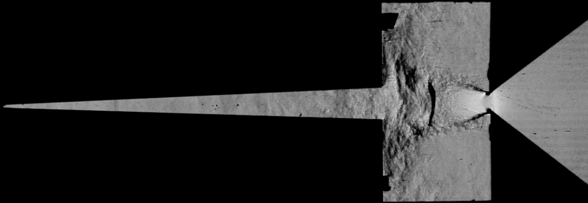
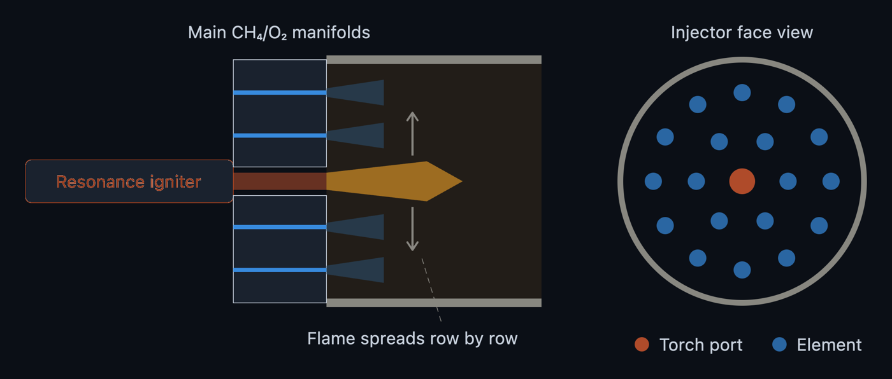
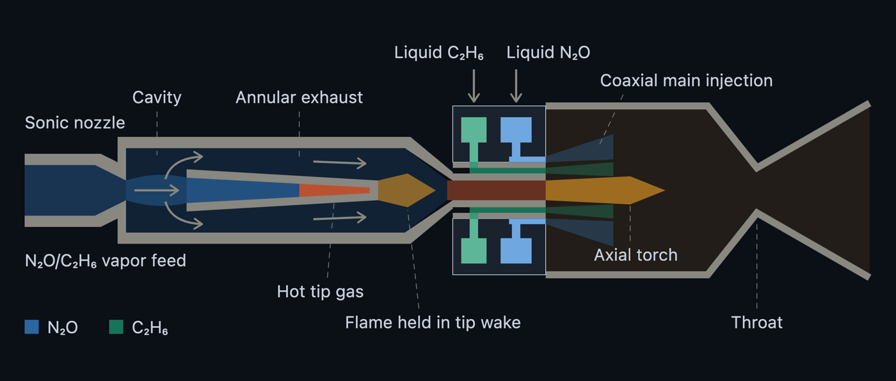
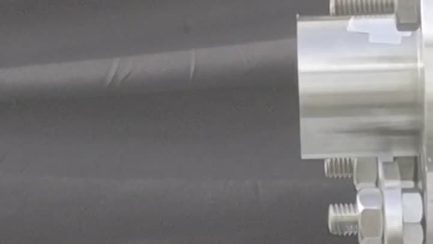
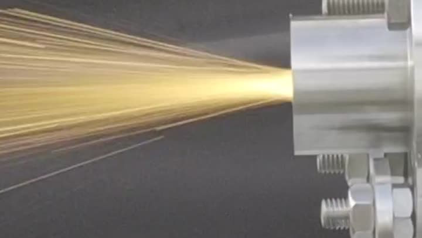
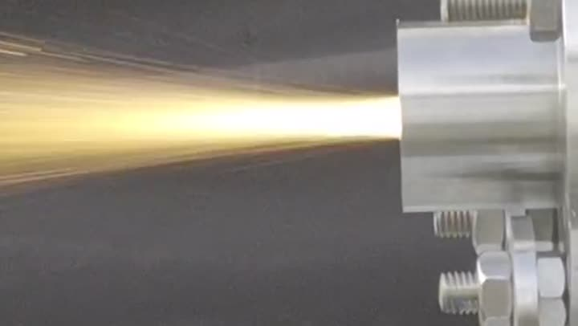
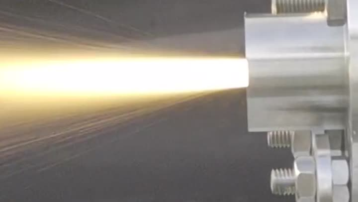
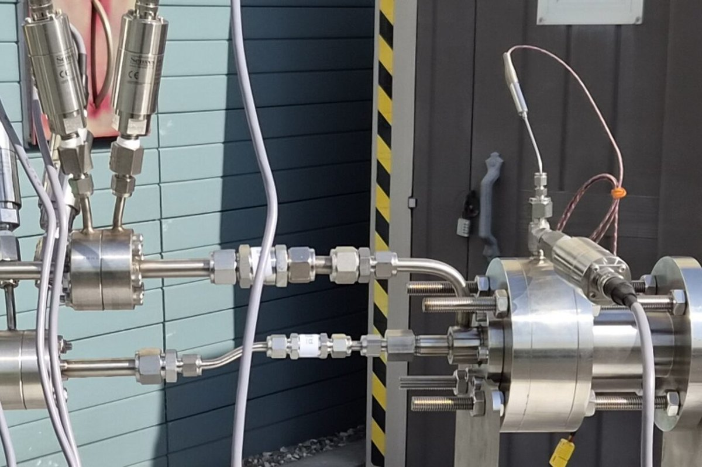
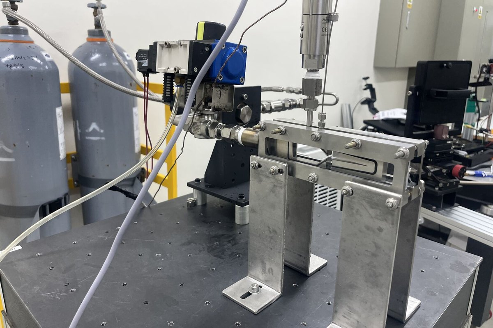

We build resonance igniters. These compact components light a rocket engine using only the pressure of its own propellants. No spark plug, no exciter and no ignition fluid.
Ignition stands for Innovative Green-propellant No-power Ignition Technology.
Hot fire, November 2026. Our CH4/O2 development model lighting with no spark and no power supply.
Shock waves heat the propellant until it ignites
A sonic jet blown into a tube with one closed end drives the gas in the tube into resonance. Each cycle compresses the gas at the closed tip a little more. When the tip passes the ignition temperature, flame runs out of the igniter as a torch and lights the main chamber.
Inflow
The jet pushes a shock toward the closed tip. The narrowing cone makes it stronger.
Reflection
The shock reflects from the tip, where pressure and temperature peak.
Outflow
The tube vents back past the nozzle. A small net heat gain stays at the tip.
Ignition
After many cycles the tip passes the ignition temperature and flame leaves as a torch.

Schlieren image of our 2D optical resonator. The jet leaves the nozzle throat on the right, a standoff shock forms in the gap, and the gas column fills the tapered tube on the left.
Fewer parts between the valve and the flame
Green propellants such as methane/oxygen and nitrous oxide blends do not ignite on contact. Each engine needs an ignition system, and today's options each add hardware, power or consumables.
Method
Electrical power
Restart
Handling and hardware
Resonance igniter
None
Yes, no consumables
No moving parts
Spark torch igniter
High-voltage exciter
Yes
Harness and electrodes
Pyrotechnic igniter
Firing circuit
No, single use
Pyrotechnic handling
Hypergolic slug (TEA–TEB)
None
Limited by stored charge
Pyrophoric fluid handling
One principle, two mountings
The same resonance igniter is built in two forms: a torch-port igniter for launch engines and an integrated igniter for in-space thrusters.

Igniters for reusable launch engines
Reusable engines relight several times per flight. The igniter sits in the torch port at the center of the injector and starts and restarts CH4/O2 engines.
Propellants
CH4/O2
Mounting
Injector torch port
First prototype
1-ton class methane engine

Igniters for green-propellant thrusters
Orbital transfer vehicles and lunar landers restart after long coasts. N2O-based propellants feed by vapor pressure, so the igniter needs no power at all.
Propellants
N2O-based, to customer choice
Mounting
Integrated in the thruster head
First prototype
20 N class thruster
Target performance, both versions
Item
Target
How we verify it
Ignition power
None
Design feature
Ignition success
≥ 95 of 100
100 firings at ambient and in vacuum
Ignition delay
< 0.2 s
Valve opening to chamber pressure rise, sampled at 100 kHz
Repeated ignition
200 cycles
Shape and mass before and after, CT scan for cracks
Targets for the customer-specific prototypes now in design, to be verified by testing in 2027 to 2028. Supply pressure, torch power and mass are set for each customer's propellants and interface.
We lit it in November 2026
Five months after our first study, the CH4/O2 development model ignited at ambient pressure and temperature with about 9 bar supply, inside the range our simulation predicted.

Propellant flowing

Ignition

Torch builds

Steady torch

Hot-fire rig with methane, oxygen and nitrogen purge lines, and pressure and temperature sensors on every line.

Lab fixture with remote valve and pressure transducer.
Ignition and flashback criteriaReacting-flow simulation sets when the tube ignites and when flame would run back upstream.
Three prototypesA 2D resonator for visualization, a 3D cold-flow resonator and a development model for hot fire.
Cold-flow heatingAir injection alone heated the 3D resonator, confirming the principle without combustion.
In-tube visualizationThe 2D optical setup measured the resonance frequency inside the tube.
Combustion test rigGas supply lines, remote valves and a control circuit with emergency stop.
Hot-fire ignitionCH4/O2 at ambient conditions and about 9 bar supply.
Our facilities: pressure sampling above 100 kHz, high-speed camera, schlieren visualization, vacuum chamber, and 2,400 CPU cores plus GPU for reacting-flow simulation.
From lab ignition to the customer's engine
Each step adds what a customer needs to see before adoption: their propellants, their geometry, vacuum, repeated firing and finally their own test facility.
Reached Nov 2026TRL 4
CH4/O2 development model
Ignition at ambient conditions
2027Rig and design
High-pressure oxidizer test rig
Thermal design and coatings
Customer propellants
First half 2028TRL 5
20 N thruster and 1-ton engine prototypes
Vacuum ignition
200-cycle repeat test
Second half 2028TRL 6
Integrated hot fire in customer facilities
Qualification models from 2029
A component supplier for engines that must restart
Our core business is developing and selling igniter components to engine and thruster makers. Custom engineering and integration support complete the offer.
Igniter components
Igniter units for launch engines and in-space thrusters, built to a qualified design.
Custom engineering
Adaptation to your propellants, supply pressures and mechanical interfaces.
Integration and test support
Joint ignition testing with your injector and chamber, with test reports.
Tell us your propellants and operating conditions
We will review how a resonance igniter fits your engine or thruster, and what test data you would need to adopt it.
Email b.lee@snu.ac.krProf. Bok Jik Lee, Founder
Department of Aerospace Engineering, Seoul National University
1 Gwanak-ro, Gwanak-gu, Seoul, Korea